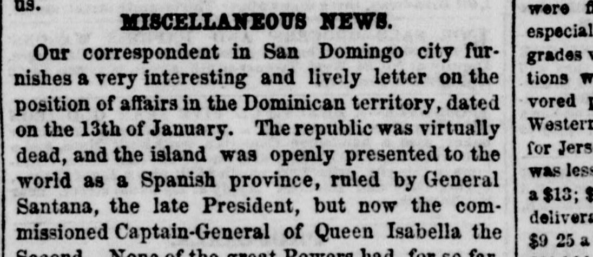
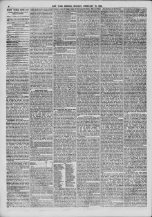

The republic was virtually dead, and the island was openly presentedLa república estaba virtualmente muerta, y la isla fue presentada abiertamente
The New York Herald. New York [N.Y.], February 10, 1862. Page 4. View the originalVer el original


See the full pageVer la página completaAccording to a January 13 dispatch reported by The New York Herald correspondent in San Domingo, the Dominican Republic was virtually dead and openly presented to the world as a Spanish province ruled by General Santana as the commissioned Captain-General for Queen Isabella. Spain promised numerous reforms as part of its policy of absorption—including declaring Samana a free port, inviting universal emigration, reducing tariffs on foreign-imported goods, proclaiming full religious toleration, and abolishing slavery—while it was also thought Queen Isabella would invite President Lincoln to send surplus negroes and contrabands to San Domingo. Additionally, the city's streets were enlivened with foreign carriages, buggies, drays, and new toilets, and the new United States Consul had not held any official intercourse with the government.Según un despacho del 13 de enero remitido por el corresponsal de The New York Herald en Santo Domingo, la República Dominicana había prácticamente dejado de existir, mostrándose abiertamente al mundo como provincia española gobernada por el general Santana como capitán general comisionado de la reina Isabel. España prometía múltiples reformas como parte de su política de absorción —incluida la declaración de Samaná como puerto libre, la invitación a la inmigración general, la rebaja de aranceles a las importaciones foráneas, la proclamación de una entera libertad de cultos y la abolición formal de la esclavitud—, al tiempo que se suponía que la reina Isabel cursaría una invitación al presidente Lincoln para asentar en Santo Domingo a los libertos negros rescatados de la Confederación («contrabands»). Asimismo, las calles de la capital se veían animadas con carruajes, calesas y carretas foráneas y novedades en el vestir, mientras que el nuevo cónsul de los Estados Unidos se abstenía de mantener trato oficial alguno con las autoridades.
FULL TEXT:TEXTO COMPLETO:
MISCELLANEOUS NEWS.NOTICIAS MISCELÁNEAS.
Our correspondent in San Domingo city furnishes a very interesting and lively letter on the position of affairs in the Dominican territory, dated on the 13th of January. The republic was virtually dead, and the island was openly presented to the world as a Spanish province, ruled by General Santana, the late President, but now the commissioned Captain-General of Queen Isabella the Second. None of the great Powers had, for so far,Nuestro corresponsal en la ciudad de San Domingo nos suministra una carta muy interesante y animada sobre la posición de los asuntos en el territorio dominicano, fechada el 13 de enero. La república estaba virtualmente muerta, y la isla estaba abiertamente presentada al mundo como una provincia española, gobernada por el General Santana, el difunto Presidente, pero ahora el Capitán General comisionado de la Reina Isabel Segunda. Ninguna de las grandes Potencias había, hasta aquí,